Battle digital animals created since 2010 by Daniella Mesquita.
Test Phonemon Blue game? Play!
To make it work, you need to resize your window to simulate the display of a phone.
Featured Phonemons


1st generation - 2010-2011
2010
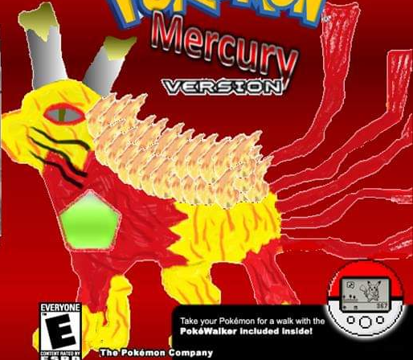
Mercuray


"received_453907274710252" (undefined name)
Oh mygush 🥺
I thought I would never ever fill the "2010" in Phonemons' list. This is a miracle
Thankfully I always liked to make public everything I do (even uggly unfinished things), so I shared these images on Messenger in the past.
In 2010 I was falling in love when I heard of the then cyan Nintendo 3DS (even nowadays I love Renault Zoe because it is cyan 💙💚). All I wanted was a metaverse (I didn't knew the word in the time being) 3D social Pokemon game. I've started a PowerPoint file describing the story, customizations and social features for avatars, new Pokemon attacks, etc.
In my innocency (at 13yo I did still had way more than 50% of the mind of a children), I believed Nintendo/GameFreak would read my suggestion about Pokemon Mercury & Ethanol and consider making the games...
I've even made the game boxes and the legendary mons. In the paper, I drew some of the starter Pokemons (Syamagma and Waterabbit), new mons and evolutions/pre-evolutions to existing mons. These papers were lost, but the legendary mons made in MS Paint had survived
2011

Back in 2011, Daniella Mesquita desisted proposing her creatures (her 2010's dream) and suggestions to The Pokémon Company, so Tamigucho/Phonemon gained its own franchise at the time called "Battmon" (battle monsters, in 2013 renamed to Phonemon and in 2016 to Tamigucho) and part of Plasmmer when it still was called "Plasma" before being moved into Gamlr in 2013.
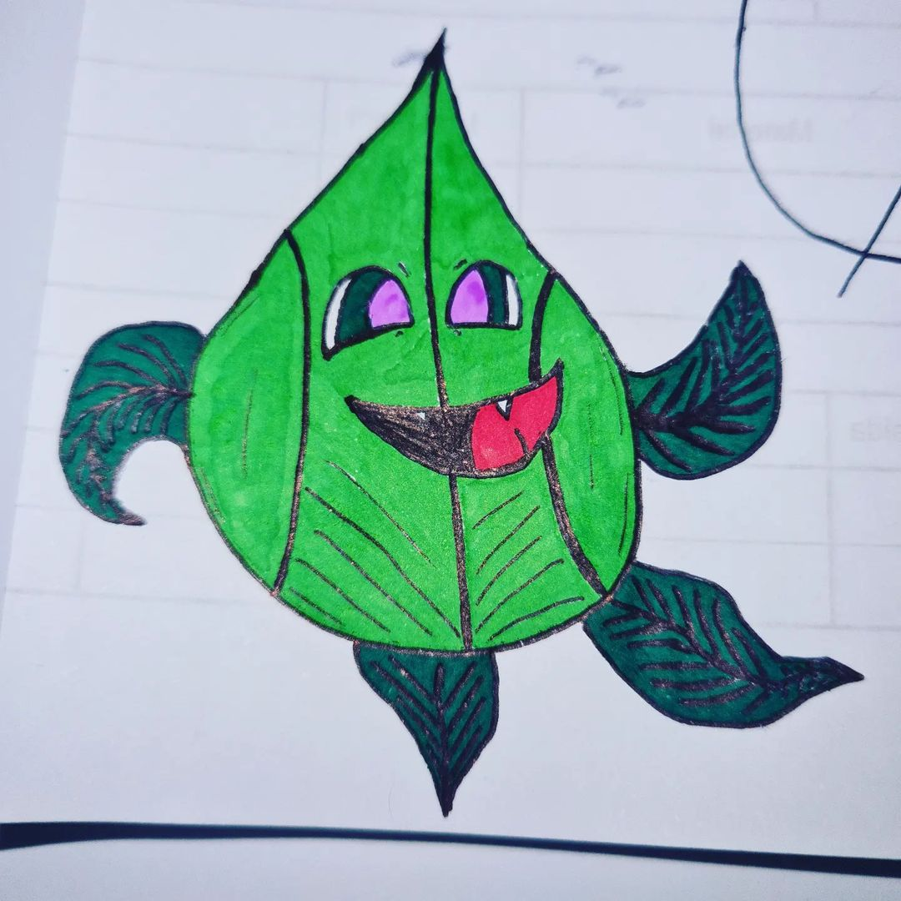
Bulball
The principal drawing, at the left, was made in 2022.
Although this drawing on the right is from 2013, Bulball was made in 2011. I do still have the original MS Paint drawing of Bulball (and an unknown metamorphosis) from 2011:


Waterain
2015's redraw of Waterain.

Bulbomb
I don't remember how Bulbomb (or Bomball) looked like in 2011, so in 2015 I re-drew it.
More 4 creatures from 2011 that I found today 26/05/2023:
These were found in this Nov 5 2011 video.

Tadpulo
.png)
?

 (this creature become red when throwing this powder attack)
(this creature become red when throwing this powder attack)
?

Trianglelec
2nd generation - 2012-2013
2012

Leizo

Leanatan
Leizo then Leanatan had their third evolution stage: Leira. But I considered it weird so I didn't scanned it.
Trivia: this was based in an insect I saw in the "forest" of our house: it walked with its tail and its mouth/head, as if both were its foots.
05/16/22 IMPORTANT DECISION: Leanatan will evolve to Platrans!

Bughost

Gruboo

Mothaunt
 From /danimesq/art/Flaguppy-616848342.
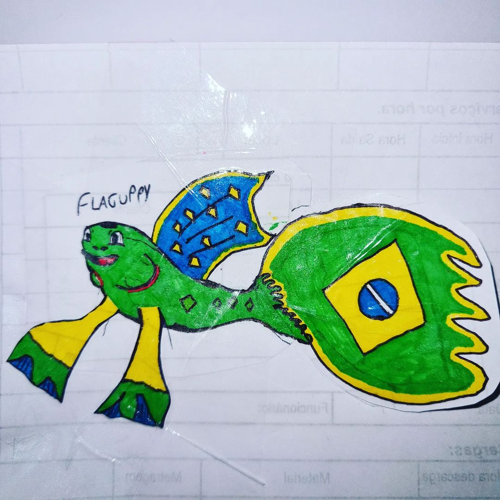 From /CdonAqUuRfB.
From /danimesq/art/Flaguppy-616848342.
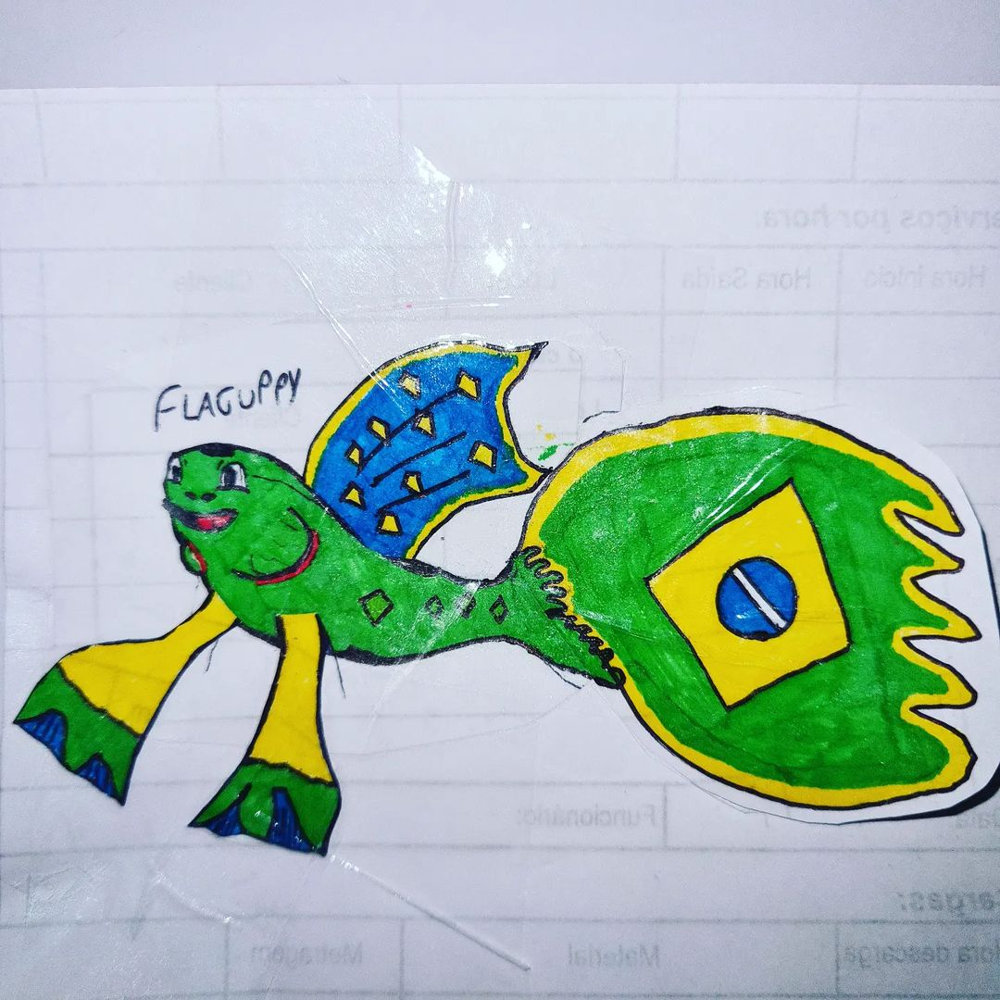 From /CdonAqUuRfB.
Flaguppy
Type: Water / Psychic
The drawing in the left is from 2013 (1 year after Flaguppy was first introduced). The drawing in the right is from 2022 (10 years after Flaguppy was first introduced).
This mon was idealized (and drawn - but lost the drawing from then) in 2012, and re-drawn in 2013.
Flaguppy was re-made from scratch in 2022.
Flag 🏳 + Guppy 🐠 = Flaguppy
Flaguppies have a so big and colored tail, that they evolved/had adapted to become flags.
This @tamigucho does only thrives in predator-free environments, due to their attractive colors and sizes/forms.
A Flaguppy raised in an aquarium will remain small, but once released in the nature they grow enough to carry humans and medium-sized tamiguchos.
Their favorite prey are mosquito larvaes, and were adapted to survive in polluted environments.
They are able to display other colors and hypnotize using psychich 🔮 powers.
The base has been inspired by @kosta_dex's Bettunch:
https://www.instagram.com/p/B0hC0bulGuo/?igshid=YmMyMTA2M2Y=
💜
(Although my inexperienced drawing has slipped from its inspiration, looking more like a seal 🦭 rather than a livebearer)
2013
Onionut
As Bulball was the first mon (and also the first characters to appear in Plasmmer - Plasma in 2011), in 2013 (which I consider the peak of Phonemon and its beautiest mons), I thought it deserved its evolutions!
Trivia: I've printed stickers of my favorite Phonemons of 2013. My school class crush Paula loved Onionut so much that she brought it to her house to stick into the house's fridge.

Ballbull
 | Redrawn version by Adriano Dultra:
| Redrawn version by Adriano Dultra: .png)
Dewhale
Dewhale was based in a character (PRB the whale) I draw since my age of 4 yo. I just changed the colors and the arms/legs.

Lizardeep
The drawing of the Dewhale's third evolution stage was lost. Like what happened to my 2010's papers, my 2013's papers were all lost but luckily I could recover the majority through scans available on Blogger; there's a possibility of more lost but RECOVERABLE mons so I'll futurely look at my Facebook Messenger media!
Through a look into my Messenger messages (by using search terms), I was able to find a screenshot containing Lizardeep's evolution (small resolution, but it exists!) 💝
It is uggly but at least I recovered a long lost thing:


"received_456397941127852" (undefined name)

Firember
Dogleed

Pandog

Bagust
When there were wind storms in my city, I loved to release supermarket/mart bags and see'm flying; then Bagust was based on this fact. Its a bag who fly.

Gruboll

Boboll

Borboll

Paulavada
Its random name came from a joke my school class colleagues made in 2012. Please don't ask me in what person this mon is based off, pls 🙏


"Abelhinha" (undefined name)
Phonemons that were long thought to be lost, were recovered from my Messenger msgs 💝

Kornative
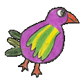
"early bird"/"Purple Bird" (undefined name)
According to what I said on Messenger, "Purple Bird" appears in the morning only.
Today at late night (after midnight) I started to think how "Purple Bird" appears only at morning and how it can't be found awaken in other periods. Idea I had: "Purple Bird" is flying non-stopping along late night, and only walks the land in the morning to eat before hiding to sleep.
Both "Abelhinha", Kornative and "early bird" share something in common: they weren't drawn at our house, but at the schoolclass in the morning.

Inflarat
As I told on Messenger, when I picked the paper I wasn't pretending to draw something like Inflarat. I just touched the paper with the pen and something random started to appear. I miss the times when my creativity flowed so easily 🥺💔

Capsuled

Carpretty
Re-draw of a mon submitted by an Internet friend. I do still have these Messenger messages stored so the history of this mon is fully preserved.

Nutiny

Nutall

Volcanut

Paguroil
The evolutions of Volcanut and Paguroil were lost in 2015/2016, together with all of the 2013's papers. 2016's Volcactus may be an answer to Volcanut's missing evolution!
3rd generation - 2014-2015
2014

Gelamp ♀

Gelamp ♂

Batebola

Lightall
By this drawing I can be sure I was in a very disturbed state of mind in 2014 😑

Planterrain

Anchorubber
All of the 2014's mons have something in common: all of them were drawn at the school class in the Eleodoro college.
This was one of the most toxic class I've studied, along with the 2011's class.
2015
I can't forget that a poor stranger brought back my lost phone, but my rich uncle never brought back my 2015's paper I left on his Honda car.
The previous drawings of Voltiny, Volturbo and Volturbillion were lost in the same year they were drawn; I had to "re-draw" in the same year based in my memory. The original were drawn in January 2015 when I was hosted in the house of my poor uncle here.

Voltiny

Volturbo

Volturbillion
 From /CdrcY9dOieC.
From /CdrcY9dOieC.
Birdumont
Type: Normal / Flying
Birdumont is known as the best and most comfortable bird to fly, due to its size.
 From /CdrTmiNuXdF.
From /CdrTmiNuXdF.
Wormorph
Type (normal): Normal
Type (transformed): Water / Ground / Dragon
Wormorph is able to regenerate any part, and even to spawn new beings based on itself (even its lost parts can regenerate)
In addition to regenerating, Wormorph is able to transform into any existing tamigucho or form.
As a known Tami professor says: "not looking like a dragon doesn't mean a mon isn't a dragon. The Dragon type is on the DNA, not on the appearance".
Wormorph is part of a small group of Tamiguchos who have more than two types.


 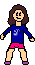
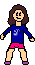
Birdumont and Wormorph (formerly Platrans) share something in common: both were initially drawn in pixels (MS Paint) and were made to test Phonemon Blue's features!
Both were re-drawn in 2022, and Platrans was renamed to Wormorph.

Creamini

Icecreamadam

Mistiny

Cloudust
4th generation - 2016-2017
2016

Etsect

Volcactus

Flashroom

Buzzaku
These mons were drawn when I was hosted in the house of my aunt in Curitiba, and they are result of one of the happiest times of my life. These mons have the spiritual vibes on my 2013's mons. The only mons that after 2016 came close to my 2013's mons, are the 2022's ones.

Shrimpider

Plantabacaxi

Wormud

Bulboll

Fortfly
Leafly
2017


Symbiant

Gastropad


Synapscizor


Ghostange

Pherreo

Lulala

Vamporo
These two mons were based in an international event happening in my city Curitiba, where later came the "plot twist" I was already aware of since the begin: it was the anti-corruption palladine vampire who was the corrupt 🤷♀️


"17076353_1815733805356407_5434443950947565568_n" (undefined name)

"16906845_386970035000124_6332974791720435712_n" (undefined name)

"IMG_20170605_0009" (undefined name)

"IMG_20170605_0011" (undefined name)

"IMG_20170605_0001" (undefined name)
5th generation - 2018-2019
2018

Nat
This mon was drawn in MS PowerPoint to be a SuperSticker (stickers that can reproduce) for my Communicator messenger project.

Bottlegg
This should be considered the official declared first Phonemon/Tamigucho of 2018 (because Nat originally wasn't made to be a mon).

"broken bottle" (undefined name)
Hey, fanfaremen: don't break beverage bottles in a party: you may discover an infuriated Tamigucho

Wheelama
Hmm, it looks like a wheel and a slug 😜

Jumpillar

Jumpod

Butterocket

Envelair
Probably this mon was made to introduce the paper type (as there's also the rubber elementar type).

Glasshield
Okay, I thought it was 2014 but it was 2018 which gave us the weirdest mons (also 2019 and 2020)
But here's the good news I noticed right now: their weirdness have the same vibes of my 2011's mons! 🪞

Shirtiny

Shirteen
I love how this mon is similar to 2013's Bagust 🖤💙

"Windwear" (undefined name)

"rubber horse 1" (undefined name)

"rubber horse/spider 2" (undefined name)
Probably this was a redraw of a 2015's lost mon (I wanted to make a rubber spider that works as a horse to transport ppl and stuff).

Floppyears
As Pokemon have Porygon and as in 2022's Tamiguchos we can have a pet rock, why not a psychic floating floppy disk? 💾

"seed" (undefined name)

"sand slug" (undefined name)

"tree slug" (undefined name)


"wanna walking seed" (undefined name)

"well walking seed" (undefined name)

First concept of the 2018's mons, in a draft

Draft and idea for Phonemon cards, the first time featuring the brand new Bottlegg 🍾

Some egg design for the 2018 mons
2019

q-Bit

Qrosstum


Shardy

Crabstone

Camerock
 From /Cdl6VjlO48F. | Redrawn version by Adriano Dultra:
From /Cdl6VjlO48F. | Redrawn version by Adriano Dultra: .png)
Above image is 2022's re-draw (added colors, new details and some changes).
Original drawing from 2019:

Potaseal
Type: Plant / Water
Potaseal = Potato 🥔 + Seal 🦭

Flappylipe

Lucaseal
Okay, Lucaseal will need a re-draw. Seriously.

"Flyineto" (undefined name)

"gamba" (undefined name)
Some of these mons will need a redraw, too.

Poopmon
"Amazing" how the 2019's mons started with q-Bit/Qrosstum and ended in IrmaosNeto/Poopmon :P

"muricoca" (undefined name)

"cicoco" (undefined name)

"little poop" (undefined name)

"tatu bolinha" (undefined name)

"tatu barata bezouro seila" (undefined name)
This mon may be removed or re-worked in the future.

"Digiminer" (undefined name)
This mon may be removed in the future.

"what what" (undefined name)
This mon may be removed or re-worked in the future.
Dogleed deserves an evolution but this mon isn't what I wanted. This is just weird

Some mons based in youtubers, others just usual mons and I love the usual mons 💖

Just a mass failed attempt to draw some mons based in the Felipe Neto's NetoLand

Brand new mons from 2019 <3


6th generation - 2020-2022
2020
This @tamigucho does only thrives in predator-free environments, due to their attractive colors and sizes/forms.
A Flaguppy raised in an aquarium will remain small, but once released in the nature they grow enough to carry humans and medium-sized tamiguchos.
Their favorite prey are mosquito larvaes, and were adapted to survive in polluted environments.
They are able to display other colors and hypnotize using psychich 🔮 powers.
The base has been inspired by @kosta_dex's Bettunch:
https://www.instagram.com/p/B0hC0bulGuo/?igshid=YmMyMTA2M2Y=
💜
(Although my inexperienced drawing has slipped from its inspiration, looking more like a seal 🦭 rather than a livebearer)
2013
Onionut
As Bulball was the first mon (and also the first characters to appear in Plasmmer - Plasma in 2011), in 2013 (which I consider the peak of Phonemon and its beautiest mons), I thought it deserved its evolutions!
Trivia: I've printed stickers of my favorite Phonemons of 2013. My school class crush Paula loved Onionut so much that she brought it to her house to stick into the house's fridge.
Ballbull
| Redrawn version by Adriano Dultra:
Dewhale
Dewhale was based in a character (PRB the whale) I draw since my age of 4 yo. I just changed the colors and the arms/legs.
Lizardeep
The drawing of the Dewhale's third evolution stage was lost. Like what happened to my 2010's papers, my 2013's papers were all lost but luckily I could recover the majority through scans available on Blogger; there's a possibility of more lost but RECOVERABLE mons so I'll futurely look at my Facebook Messenger media!
Through a look into my Messenger messages (by using search terms), I was able to find a screenshot containing Lizardeep's evolution (small resolution, but it exists!) 💝
It is uggly but at least I recovered a long lost thing:
"received_456397941127852" (undefined name)
Firember
Dogleed
Pandog
Bagust
When there were wind storms in my city, I loved to release supermarket/mart bags and see'm flying; then Bagust was based on this fact. Its a bag who fly.
Gruboll
Boboll
Borboll
Paulavada
Its random name came from a joke my school class colleagues made in 2012. Please don't ask me in what person this mon is based off, pls 🙏
"Abelhinha" (undefined name)
Phonemons that were long thought to be lost, were recovered from my Messenger msgs 💝
Kornative
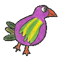"early bird"/"Purple Bird" (undefined name)
According to what I said on Messenger, "Purple Bird" appears in the morning only.
Today at late night (after midnight) I started to think how "Purple Bird" appears only at morning and how it can't be found awaken in other periods. Idea I had: "Purple Bird" is flying non-stopping along late night, and only walks the land in the morning to eat before hiding to sleep.
Both "Abelhinha", Kornative and "early bird" share something in common: they weren't drawn at our house, but at the schoolclass in the morning.
Inflarat
As I told on Messenger, when I picked the paper I wasn't pretending to draw something like Inflarat. I just touched the paper with the pen and something random started to appear. I miss the times when my creativity flowed so easily 🥺💔
Capsuled
Carpretty
Re-draw of a mon submitted by an Internet friend. I do still have these Messenger messages stored so the history of this mon is fully preserved.
Nutiny
Nutall
Volcanut
Paguroil
The evolutions of Volcanut and Paguroil were lost in 2015/2016, together with all of the 2013's papers. 2016's Volcactus may be an answer to Volcanut's missing evolution!
3rd generation - 2014-2015
2014
Gelamp ♀
Gelamp ♂
Batebola
Lightall
By this drawing I can be sure I was in a very disturbed state of mind in 2014 😑
Planterrain
Anchorubber
All of the 2014's mons have something in common: all of them were drawn at the school class in the Eleodoro college.
This was one of the most toxic class I've studied, along with the 2011's class.
2015
I can't forget that a poor stranger brought back my lost phone, but my rich uncle never brought back my 2015's paper I left on his Honda car.
The previous drawings of Voltiny, Volturbo and Volturbillion were lost in the same year they were drawn; I had to "re-draw" in the same year based in my memory. The original were drawn in January 2015 when I was hosted in the house of my poor uncle here.
Voltiny
Volturbo
Volturbillion
From /CdrcY9dOieC.
Birdumont
Type: Normal / Flying
Birdumont is known as the best and most comfortable bird to fly, due to its size.
From /CdrTmiNuXdF.
Wormorph
Type (normal): Normal
Type (transformed): Water / Ground / Dragon
Wormorph is able to regenerate any part, and even to spawn new beings based on itself (even its lost parts can regenerate)
In addition to regenerating, Wormorph is able to transform into any existing tamigucho or form.
As a known Tami professor says: "not looking like a dragon doesn't mean a mon isn't a dragon. The Dragon type is on the DNA, not on the appearance".
Wormorph is part of a small group of Tamiguchos who have more than two types.
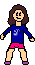
Birdumont and Wormorph (formerly Platrans) share something in common: both were initially drawn in pixels (MS Paint) and were made to test Phonemon Blue's features!
Both were re-drawn in 2022, and Platrans was renamed to Wormorph.
Creamini
Icecreamadam
Mistiny
Cloudust
4th generation - 2016-2017
2016
Etsect
Volcactus
Flashroom
Buzzaku
These mons were drawn when I was hosted in the house of my aunt in Curitiba, and they are result of one of the happiest times of my life. These mons have the spiritual vibes on my 2013's mons. The only mons that after 2016 came close to my 2013's mons, are the 2022's ones.
Shrimpider
Plantabacaxi
Wormud
Bulboll
Fortfly
Leafly
2017
Symbiant
Gastropad
Synapscizor
Ghostange
Pherreo
Lulala
Vamporo
These two mons were based in an international event happening in my city Curitiba, where later came the "plot twist" I was already aware of since the begin: it was the anti-corruption palladine vampire who was the corrupt 🤷♀️
"17076353_1815733805356407_5434443950947565568_n" (undefined name)
"16906845_386970035000124_6332974791720435712_n" (undefined name)
"IMG_20170605_0009" (undefined name)
"IMG_20170605_0011" (undefined name)
"IMG_20170605_0001" (undefined name)
5th generation - 2018-2019
2018
Nat
This mon was drawn in MS PowerPoint to be a SuperSticker (stickers that can reproduce) for my Communicator messenger project.
Bottlegg
This should be considered the official declared first Phonemon/Tamigucho of 2018 (because Nat originally wasn't made to be a mon).
"broken bottle" (undefined name)
Hey, fanfaremen: don't break beverage bottles in a party: you may discover an infuriated Tamigucho
Wheelama
Hmm, it looks like a wheel and a slug 😜
Jumpillar
Jumpod
Butterocket
Envelair
Probably this mon was made to introduce the paper type (as there's also the rubber elementar type).
Glasshield
Okay, I thought it was 2014 but it was 2018 which gave us the weirdest mons (also 2019 and 2020)
But here's the good news I noticed right now: their weirdness have the same vibes of my 2011's mons! 🪞
Shirtiny
Shirteen
I love how this mon is similar to 2013's Bagust 🖤💙
"Windwear" (undefined name)
"rubber horse 1" (undefined name)
"rubber horse/spider 2" (undefined name)
Probably this was a redraw of a 2015's lost mon (I wanted to make a rubber spider that works as a horse to transport ppl and stuff).
Floppyears
As Pokemon have Porygon and as in 2022's Tamiguchos we can have a pet rock, why not a psychic floating floppy disk? 💾
"seed" (undefined name)
"sand slug" (undefined name)
"tree slug" (undefined name)
"wanna walking seed" (undefined name)
"well walking seed" (undefined name)
First concept of the 2018's mons, in a draft
Draft and idea for Phonemon cards, the first time featuring the brand new Bottlegg 🍾
Some egg design for the 2018 mons
2019
q-Bit
Qrosstum
Shardy
Crabstone
Camerock
From /Cdl6VjlO48F. | Redrawn version by Adriano Dultra:
Above image is 2022's re-draw (added colors, new details and some changes).
Original drawing from 2019:
Potaseal
Type: Plant / Water
Potaseal = Potato 🥔 + Seal 🦭
Flappylipe
Lucaseal
Okay, Lucaseal will need a re-draw. Seriously.
"Flyineto" (undefined name)
"gamba" (undefined name)
Some of these mons will need a redraw, too.
Poopmon
"Amazing" how the 2019's mons started with q-Bit/Qrosstum and ended in IrmaosNeto/Poopmon :P
"muricoca" (undefined name)
"cicoco" (undefined name)
"little poop" (undefined name)
"tatu bolinha" (undefined name)
"tatu barata bezouro seila" (undefined name)
This mon may be removed or re-worked in the future.
"Digiminer" (undefined name)
This mon may be removed in the future.
"what what" (undefined name)
This mon may be removed or re-worked in the future.
Dogleed deserves an evolution but this mon isn't what I wanted. This is just weird
Some mons based in youtubers, others just usual mons and I love the usual mons 💖
Just a mass failed attempt to draw some mons based in the Felipe Neto's NetoLand
Brand new mons from 2019 <3
6th generation - 2020-2022
2020
There were Tamiguchos made in 2020, but they were lost (landlord in Curitiba probably vanished them bc even people he treated as trash, even more when it's not ppl but papers). Recovery possibility is very low.
Was it a curse on every start of decade? My from-paper mons of 2010, also, I don't have 😜
2021

Femantis/Transect
2022
 | Redrawn version by Adriano Dultra:
| Redrawn version by Adriano Dultra: 
Petalrock

Algalone

Algalthea

Wormit
| Redrawn version by Adriano Dultra: 
Craboll

Ancientrumphet

"277249155_676324357029859_6416661177868556306_n" (undefined name)
Dolphnia

Funry ♂
Funry ♀

Crabterfly
From /Cdhdve3OGWG.
Redrawn version by Adriano Dultra:
.png) (will be its form when two Sprouterra merge before morphing)
(will be its form when two Sprouterra merge before morphing)
Sprouterra
Type: Plant / Ground / Water
It is a ball of dirt with a happy sprout ball growing inside it.
Sprouterras are distributed in Earth Day events as a symbol of soil & plants health.
The world environment conservation organization that promotes Sprouterra says: "If forests were as cute as baby cats, people wouldn't destroy it; that's the idea of Sprouterra"
Sprouterra morphs into its nymph, Poterra, before taking into the adult stage.
Sprouterra is the first mon to have three elementary types and lose one after morphing.
All of the life of Sprouterra is inside water. When they gets out of water by their own, it means Sprouterra is ready to metamorph into its nymph: Poterra.
Reproduction: No.
 From /CdhbJNXOU6g.
From /CdhbJNXOU6g.
Poterra
Type: Plant / Ground
It makes its own children by taking from its own dirt and molding in their own hands. The sprouts in this handmade ball will give life to Sprouterra.
The grass in the head is the crown of Poterra, but also contains its vegetable brain.
Poterra is exclusively diurnal and depends on a sunny day for reasoning properly (as its brain depends on the sugar the grasses produces through photosynthesis).
Together with earthworms, Poterras are essential for soil & sprouts development.
This Tamigucho is gifted on the Earth Day as a convention (and as gratitude for keeping the Earth & Nature healthy 🤎💚
Reproduction: Independent/autonomous.
Lay type: Not eggs but babies.
From /CdjDpivuIg4. | Redrawn version by Adriano Dultra: 
Treearth
Type: Plant / Ground
This is the adult form of Sprouterra.
Treearth comes from Sprouterra's nymph: Poterra.
After morphing, Poterra's face returns to its cute form of baby.
Sometimes Treearth can't breathe healthily, because it adapts its Carbon or Oxigen production according to the environment's needs.
When there's a disbalance on the nature, it affects Treearth's health which in turns affects the health of all other living beings.
Treearth is an aim for thunders, but its ground type is an effective defense against electricity.
When you see a tree, it may be a Treearth, as it hidden its face using a wooden faceshield.
If a Treearth is comfortable and revealed, usually they likes to play yo-yo using a leaf ball and a insect sting.
There's different types of Treearth: with green/red apples 🍎, with oranges 🍊 and lemons 🍋, grapefruits 🍇, etc.
 From /CdjFRDyOKAS. | Redrawn version by Adriano Dultra:
From /CdjFRDyOKAS. | Redrawn version by Adriano Dultra:

.png)
"280655386_161240449703291_8613342802614451338_n" (undefined name)
This fish mon is based in a saved popcorn I found cute and looked like a fish
From all of the Phonemons/Tamiguchos, this is the first to be in 3D.

 From /CeMOPbKO-ne and /CeMPwyXOf38.
From /CeMOPbKO-ne and /CeMPwyXOf38.
Dragonymph
Type (diurnal): Water / Bug / Fire
Type (nocturnal): Water / Bug / Dark
1st image: diurnal variant.
2nd image: nocturnal variant.
Dragonymph lives its entire life in the water, and hunts prey in a lightning speed.
Acknowledging so, its also one of the fastest swimmers; all that despite being a bug, with a shrimp-like living.
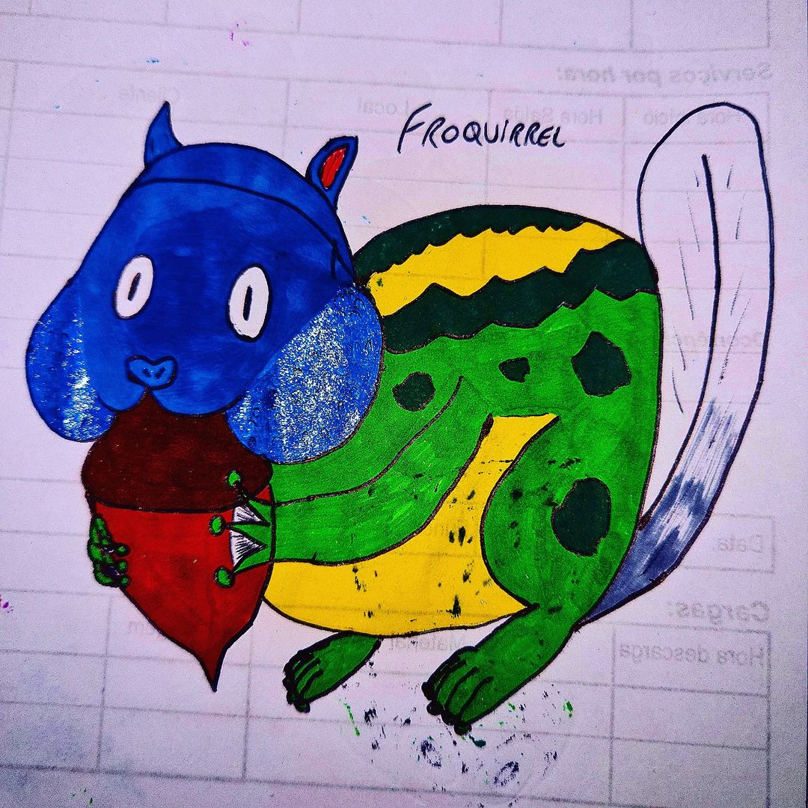 From /CeMckagOAhu.Froquirrel
Type: Water / Electric
Frog 🐸 + Squirrel 🐿 = Froquirrel
Instead of storing nuts, Froquirrel stores water on its translucid blue, balloon-like cheeks.
Its belly stores electricity.
The only furry part of its body is its striked back, which is able to launch electric beams; the rest (except the rubber-like cheeks) resembles the skin of reptiles.
 From /CeW_oz2uBbl.
From /CeW_oz2uBbl.
First concept design/draft.
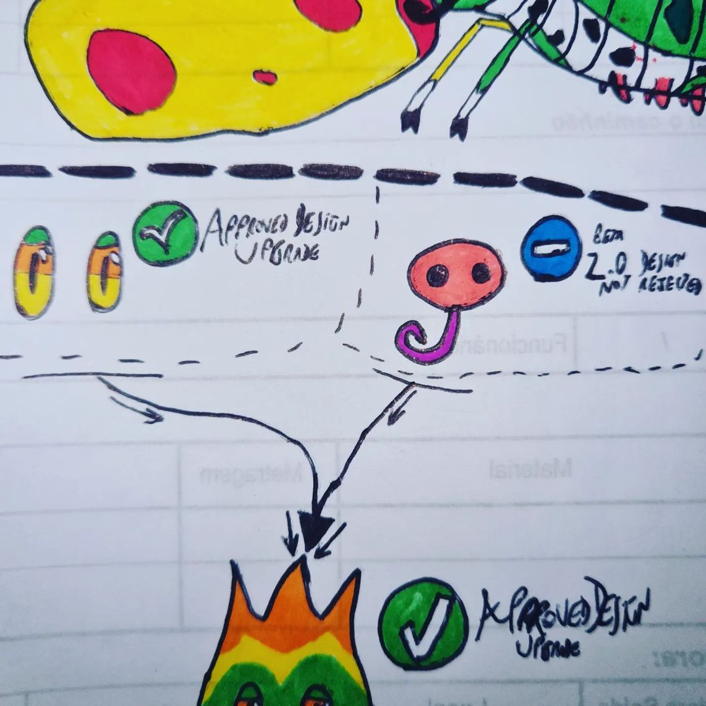
 From /CeXRTtYu_xz.
From /CeXRTtYu_xz.
Re-design/upgrade process.
From /CeXRTtYu_xz:Aphidrink's face-lift
This is now the definite, upgraded design for Aphidrink's face (and also a definite nomenclature)!
Before attempting to redraw a whole thing, first I did a trial/error/improvement training for its eyes and nose/mouth, for then adding all that to its face.
A fragmented/partitioned refinement process that proved effective!
Similar process I did when composing Flaguppy: https://www.instagram.com/p/CdonAqUuRfB/?igshid=YmMyMTA2M2Y=
Aphidrink
Type: Bug
This tamigucho loves to absorb sugar from Funries and convert into an nutritious milk that some insects love to drink.
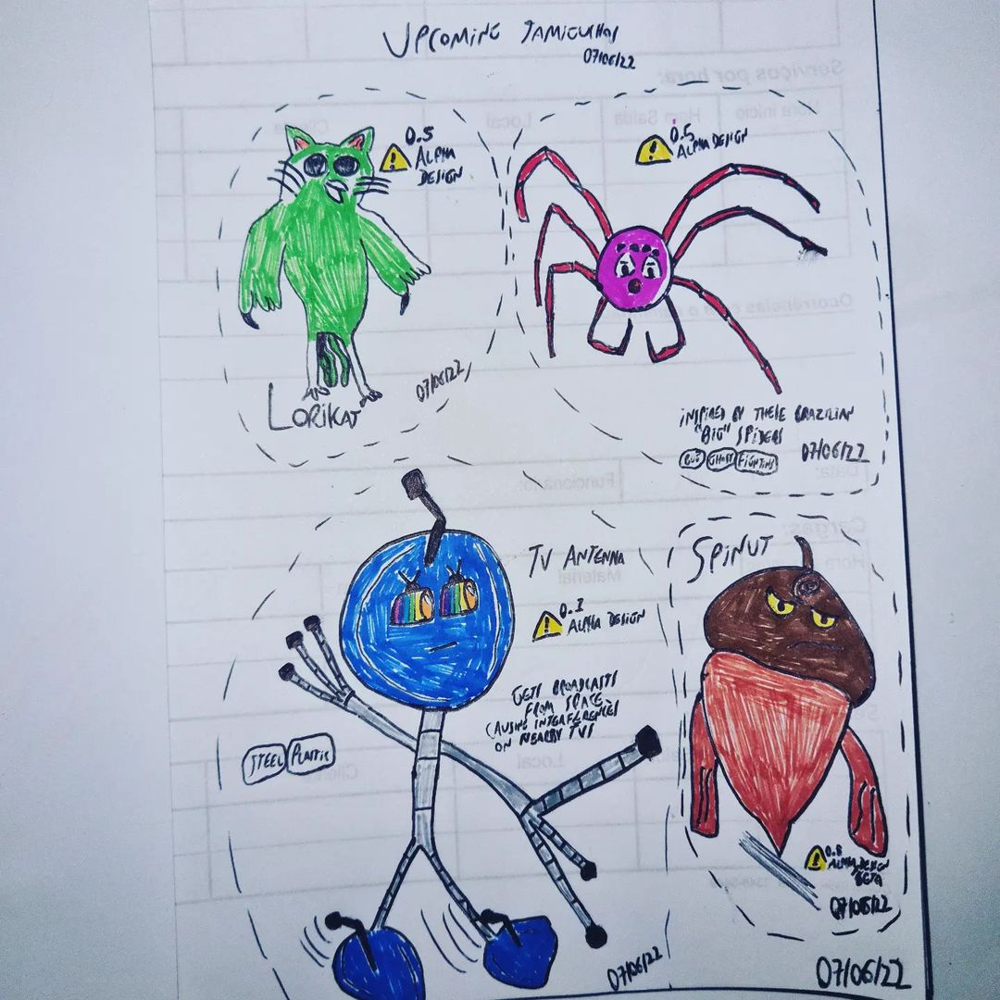 From /Cehyji_uRq3.
Upcoming/draft mons that were result of a creativity block and headache I had.
I have a nephew who was raised to like monstruous creatures and he said these four mons are "legendary": which means I have a lot to change on these.
Upcoming Tamiguchos and their alpha/beta design
1:
A parrot or a cat? This is the question about Lorikat.
2:
Based on that long-legged, flat spiders who thrives just everywhere
3:
An antenna that gets broadcasting from the space and interferes on nearby TVs
4:
Spinut; it's name is suggestive/intuitive
There's a month since the "Lorikat" name first appeared in my ideas.
That spider? I thought about it today after seeing one of these spiders around while I was washing my hands (this spider is still well, btw)
The antenna 📡 and Spinut? Thought about them while live drawing/flowing (spontaneous).
From these four, only two have defined names: Lorikat and Spinut.
Also, Spinut is the only one with a clear insight about its finished design.

 From /Cer9_eXuKWq.
From /Cer9_eXuKWq.
Spinut and the antenna Tamigucho were re-drawn. Spinut is closer to a finished design. The antenna Tamigucho will be completely redrawn from scratch and named Beetenna.
From /Cer9_eXuKWq:Re-design
Spinut and the antenna 📡 Tamigucho went into a redesign
Their design may improve even more until a MVP is reached
Spinut
Type: Plant / Fighting
"Antenna"
Type: Steel / Plastic / Psychic
From /Ce6psqtODa-.
Starecover
Type: Psychic / Fairy
This is the first "UltraBlackholer" (this nomenclature may change).
When Starecover sees petrified beings, it cries; its crying have the power of reviving and piercing rocks 💧🪨
 From /CfHRcxCOg10.
From /CfHRcxCOg10.
Bittlelittle
Type: Ground / Poison
Bittlelittle uses its fingers to throw venomous mass.
[PERSONAL NOTE]: I hope Bittlelittle never makes its way into an actual, official Tamigucho
 From /CfKmbkLOHog.
From /CfKmbkLOHog.
??
Type: Fighting / Dark
This cat have the power of foreseeing and manipulating the future.
It have a hidden DNA of the psychic and light types.
 From /CfLAtdJuzmp.
From /CfLAtdJuzmp.
New Tamiguchos
Papirdo [Alpha/Beta design]
Type: Paper / Flying
Sindcube
Type: Water / Ground
When Sindcube's egg hatches bellow the sand, a cube-headed turtle emerges. If for any reason or event Sindcube loses its head cube, it digs its head in the sand to recover it.
Micromacro (Bacteria Form)
Type: Psychic / Fairy
This tamigucho have the power to maximize or minimize its size according to its needs. Micromacros in the Virus Form may maximize and appear after people or tamiguchos sneezes
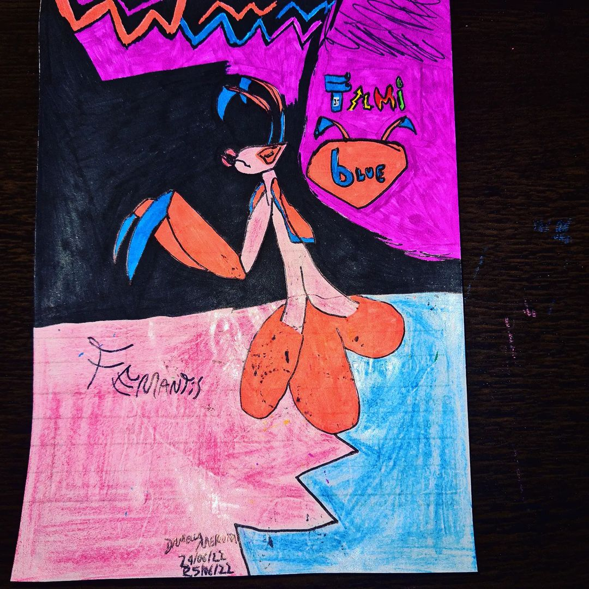 From /CfPreQqObLG.
Femantis
Type: ? / ?
A myth is spread that it is Femantis who spread the spirit of feminity and the parental feelings + care.
One of the covers for Tamigucho Pink & Blue
 From /Cfsvohyu_Lv.
From /Cfsvohyu_Lv.
Celacorn, pré-morph of Popcanth. [DRAFT]
Type: ? / ?
After being in contact with the power of a fire Tamigucho, they morphed into Popcanth.
It is believed that ancient civilizations discovered the popcorn thanks to the now extinct Celacorn and Popcanth.
 From /Cf5RzbcOR9i.
From /Cf5RzbcOR9i.
Pitwo
Type: Water / Psychic
Right before hatching, their tail jumps out as if it were a gecko, and is ready to be used to surf
7th generation - 2023-2024
2023
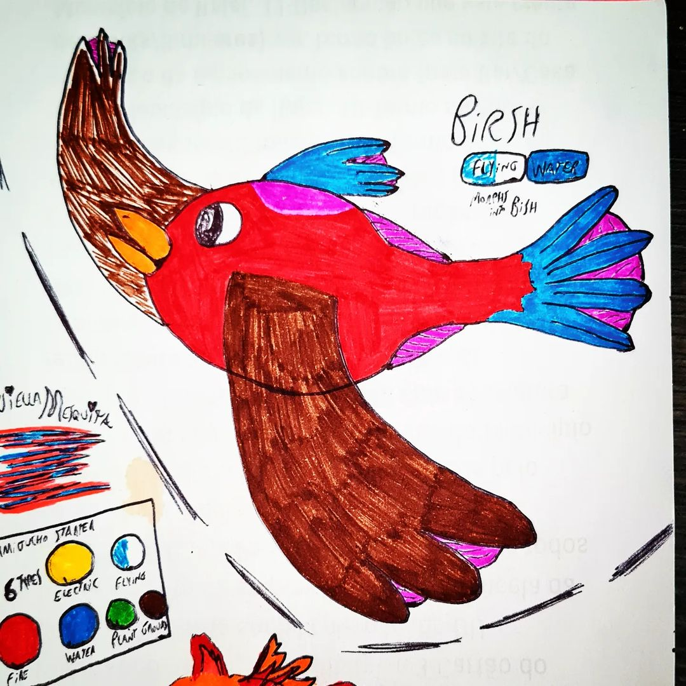 From /Cn4y7kbOFmo.
Birsh
Type: Water / Flying
This @tamigucho is the 2023's first to be drawn.
Birsh is a bird that, like mammals such as dolphins, adapted to live in seas like fishes.
It adapted to live 24/7 in the water by creating an air bubble that also protects their tamers when traveling underwater; this air bubble is created by a symbiosis with another tamigucho
Birsh is also known as "the aquatic Birdumont".
 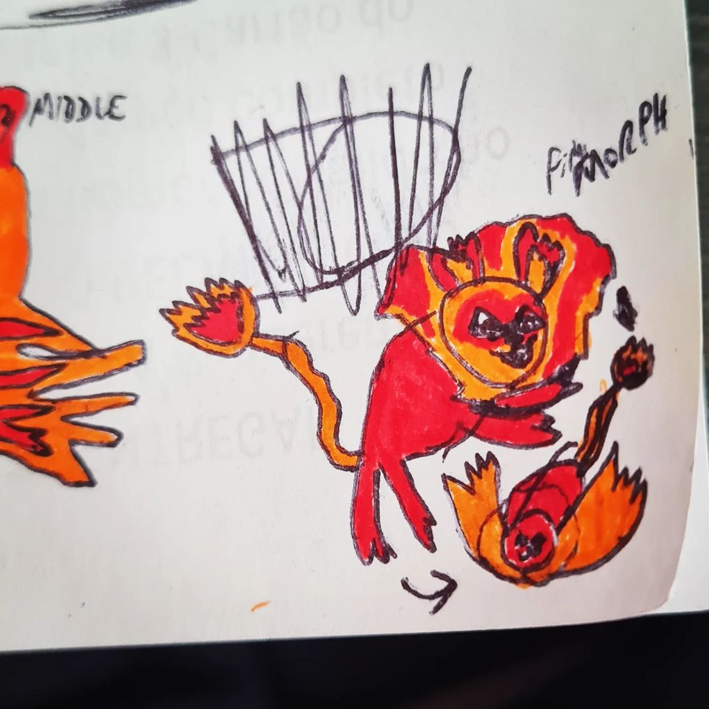 From /Cn4zlRwu3eJ.
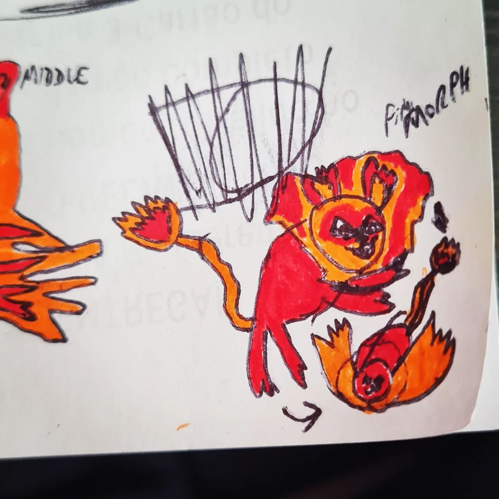 From /Cn4zlRwu3eJ.
??
Type: Fire / Flying
A fire lion @tamigucho in its middle and adult stages.
On its final morph, from its back it hides wings on its fur.
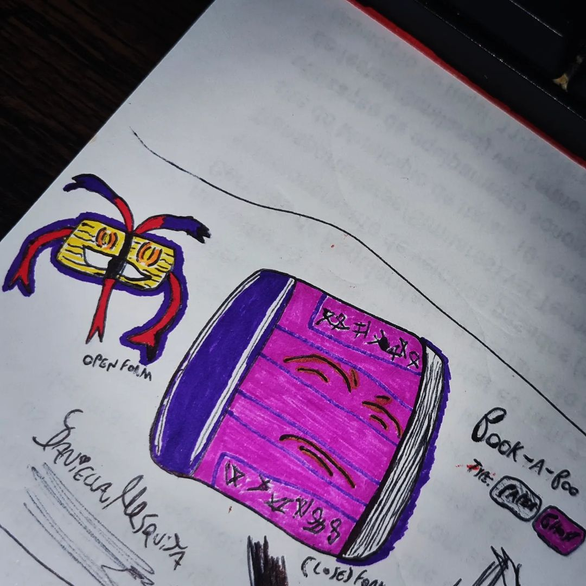 From /Cpva-apODBc.
Book-a-boo
Type: Paper / Ghost
This @tamigucho, when open, become powered by the spirit(s) of the author(s) of a book.
It is said that when a book isn't open for years, it gains life as a book-a-boo
 From /CsIArqxOdk1.
From /CsIArqxOdk1.
Petalrock Strawberry variation
Type: Plant / Fairy
The Petalrock @tamigucho, but 🍓 version 🩷🤍
 From /CsjZ8KPuyQ2.
From /CsjZ8KPuyQ2.